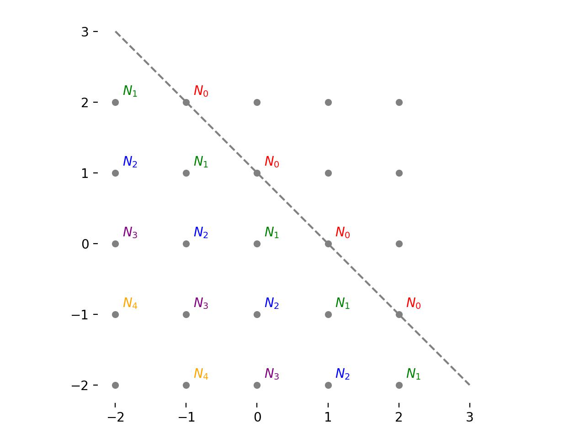

Random Ants
Recently, I came across a fun puzzle. The setup is as follows:
An ant leaves its anthill in order to forage for food. It moves with the speed of 10cm per second, but it doesn’t know where to go, therefore every second it moves randomly 10cm directly north, south, east or west with equal probability.
This was then followed by three questions:
Question 1
If the food is located on east-west lines 20cm to the north and 20cm to the south, as well as on north-south lines 20cm to the east and 20cm to the west from the anthill, how long will it take the ant to reach it on average?
Figure 1: A representation of the possible places the ant can be, labelled with the expected number of steps to reach the boundary at each location for question 1.
For simplicity, let's make the definition that 10cm = 1 unit. Initially, the ant is at the origin which we can label as
Let's denote the expected number of steps to reach the boundary from this initial location as \(N_0\) . This is labelled in red in figure 1. After one step, the ant takes a step of one unit north, south, east or west with equal probability. This means that it is guaranteed to be at one of the following four points:
By examining the symmetry of the problem, it is clear that the expected number of steps to reach the boundary is the same for all four of these points. Let's denote that as \(N_1\) . This is labelled in green in figure 1.
If the ant is at \(\mathbf{x}_1\) , there are three possibilities for what can happen next:
- With probability \(1/4\) , it goes back to \(\mathbf{x}_0\) .
- With probability \(1/4\) , it reaches the boundary.
- With probability \(1/2\) , it reaches one of the following points
Again, due to the symmetry of the problem, the expected number of steps required to reach the boundary from one of these points is the same for each. Let's denote that \(N_2\) . If the ant is at \(\mathbf{x}_2\) , there are two possibilities for what can happen next:
- With probability \(1/2\) , it reaches the boundary
- With probability \(1/2\) , it goes back to \(\mathbf{x}_1\) .
In order to solve for \(N_0\) , \(N_1\) and \(N_2\) , the key point to recognise is that
All this information can be summarised into a system of linear equations:
This system of equations has the following solution.
Therefore the expected number of steps to reach the food, starting from the origin is 4.5.
Question 2
What is the average time the ant will reach food if it is located only on a diagonal line passing through (10cm, 0cm) and (0cm, 10cm) points?

Figure 2: A representation of the possible places the ant can be, labelled with the expected number of steps to reach the boundary at each location for question 2.
For this problem, we effectively have the setup depicted in figure 2, where once again we are using the notation \(N_i\) to denote the expected number of steps required to reach the boundary from a set of points. In this case, all the points along the boundary line are labelled \(N_0\) . All the points passing through the line parallel to the boundary, shifted down by one, are labelled \(N_1\) and so on (see figure). We know that \(N_0 = 0\) the task is to find \(N_1\) .
Figure 3: An equivalent 1D representation of the problem.
By examining the symmetry of this problem, we can actually shift it to a 1D view for simplicity. This is shown in figure 3. We denote all the points along the \(N_0\) line as \(\mathbf{x}_0\) , all the points along the \(N_1\) line as \(\mathbf{x}_1\) and so on. For an ant at \(\mathbf{x}_i\) , where \(i>0\) , it has a probability of \(1/2\) of moving to \(\mathbf{x}_{i-1}\) and \(1/2\) of moving to \(\mathbf{x}_{i+1}\) . This can be summarised in the following system of equations.
Trying to solve this as a system of linear equations is problematic, as there are an infinite number of variables. Let's start with a simplifying assumption. Assume that for some \(k\) , the probability of going from \(\mathbf{x}_k\) to \(\mathbf{x}_{k+1}\) is zero, and the ant moves back to \(\mathbf{x}_{k-1}\) with probability 1. Lets denote the expected number of steps under this new setup for a given \(k\) , at some point \(\mathbf{x}_i\) , to be \(N^k_i\) . Then
Note that, for any finite \(k\) , \(N_1 > N^k_1\) , because we have artificially disallowed movement backwards past a certain point. In a sense,
Since the system of equations for some given \(k\) is finite, it can be solved. Let's take \(k=4\) as an example.
Performing some simple substitutions, we can see that
So, in this case, \(N^4_1 = 7\) . Solving for \(k=5\) gives \(N^5_1 = 9\) . The pattern becomes clear:
It is clear that
Therefore the expected number of steps the ant takes in this setup is infinite.
Question 3
Can you write a program that comes up with an estimate of average time to find food for any closed boundary around the anthill? What would be the answer if food is located outside an defined by
in coordinate system where the anthill is located at \((x = 0\text{cm}, y = 0\text{cm})\) ?
Figure 4: The general case. No symmetry is assumed, and the expected number of steps to reach the boundary can be different at each location. We also have a bounding box of points to consider marked in red.
If the boundary is closed around the origin, the expected number of steps to reach it must be finite. The simplest way to approximate the expected number of steps from the origin would be to just simulate the random walk many times and take an average. However, since the resulting linear system will be finite, we can actually solve for it directly.
Let's begin by defining a boundary function that accepts an \(x\) and \(y\) coordinate in our scaled units, and returns a boolean flag indicating whether the point is contained within the boundary. This can be any closed path around the origin, here we use the one defined in the question.
In code, this looks like
import numpy as np
def boundary(x: np.ndarray, y: np.ndarray) -> np.ndarray:
"""
Define a general boundary function, in this case an ellipse. This takes a
series of x ad y coordinates, and returns an array of boolean flags
indicating whether each x-y pair is contained within the boundary.
Params:
x: x-coordinates of interest
y: y-coordinates of interest
Returns an array of bools
"""
return ((x - 0.25) / 3) ** 2 + ((y - 0.25) / 4) ** 2 < 1
Next let's specify a region of interest by defined by a grid of points going from integers \(x_0\) to \(x_1\) and \(y_0\) to \(y_1\) . Lets hand-select these values such that the resulting rectangle surrounds the boundary. Then, let's label the number of steps required to reach the boundary from each point inside this rectangle (including the edges) as \(N_{(x, y)}\) . For any point outside the boundary, \(N_{(x, y)} = 0\) . Our goal is to compute \(N_{(0, 0)}\) . This is depicted in figure 4. In this case, the boundary is shown in gray, and the rectangle with \(x_0=-3\) , \(x_1=4\) , \(y_0=-4\) and \(y_1=5\) is shown in red.
For any point inside the boundary, the ant has equal probability of going north, south east or west. Therefore, if \((x, y)\) is within the boundary, then
or
We can put this together into a system of equations as follows.
where
The matrix \(A\) has elements \(A_{i, j}\) given by
where \(n_x = (x_1 - x_0 + 1)\) .
Let's put all of this into a function.
def expected_steps(boundary: callable, xlim=(-3, 4), ylim=(-4, 5)) -> np.ndarray:
"""
Compute the expected number of steps to reach the boundary from each point
within the bounding rectangle.
Params:
boundary: a boundary function
xlim: the x-limits of the rectangle
ylim: the y-limits of the rectangle
Returns:
expected_steps: the expected number of steps to reach the boundary.
"""
# create a grid of points
xrange = np.arange(xlim[0], xlim[1] + 1e-5)
yrange = np.arange(ylim[0], ylim[1] + 1e-5)
nx = len(xrange)
ny = len(yrange)
N = nx * ny
x, y = np.meshgrid(xrange, yrange)
# check if each point is inside the boundary
bounded = boundary(x.ravel(), y.ravel())
# create system matrix
A = np.eye(N)
for i in range(N):
if bounded[i]:
A[i, i + nx] = -0.25
A[i, i - nx] = -0.25
A[i, i + 1] = -0.25
A[i, i - 1] = -0.25
# solve the linear system
return np.linalg.solve(A, bounded.astype(float)).reshape(ny, nx)
It remains only to construct this matrix and solve the resultant linear system. In this case, we get that
We can plot the result to get a sense of the whole solution.
Let's try it with another arbitrary boundary function
def batman_upper(x: np.ndarray) -> np.ndarray:
y = np.zeros_like(x)
c1 = np.abs(x) > 7
c2 = (np.abs(x) <= 7) & (np.abs(x) > 3)
c3 = (np.abs(x) <= 3) & (np.abs(x) > 1)
c4 = (np.abs(x) <= 1) & (np.abs(x) > 0.75)
c5 = (np.abs(x) <= 0.75) & (np.abs(x) > 0.5)
c6 = np.abs(x) <= 0.5
y[c1] = np.nan
y[c2] = 3 * (1 - (x[c2] / 7) ** 2) ** 0.5
y[c3] = 1.5 - 0.5 * np.abs(x[c3]) - 6 * 10 ** 0.5 / 14 * ((3 - x[c3] ** 2 + 2 * np.abs(x[c3])) ** 0.5 - 2)
y[c4] = 9 - 8 * np.abs(x[c4])
y[c5] = 3 * np.abs(x[c5]) + 0.75
y[c6] = 2.25
return y
def batman_lower(x: np.ndarray) -> np.ndarray:
y = np.zeros_like(x)
c1 = np.abs(x) > 7
c2 = (np.abs(x) <= 7) & (np.abs(x) > 4)
c3 = np.abs(x) <= 4
y[c1] = np.nan
y[c2] = -3 * (1 - (x[c2] / 7) ** 2) ** 0.5
y[c3] = np.abs(x[c3] / 2) - x[c3] ** 2 * (3 * 33 ** 0.5 - 7) / 112 + (1 - (np.abs(np.abs(x[c3]) - 2) - 1) ** 2) ** 0.5 - 3
return y
def batman_boundary(x: np.ndarray, y: np.ndarray) -> np.ndarray:
upper = batman_upper(x)
lower = batman_lower(x)
return (y < upper) & (y > lower)
Notes for improvement:
-
We really should perform some checks on the boundary function and the rectangle before running the solver. For example, the origin should be inside the boundary and the rectangle, and all points along the rectangle edges should be outside the boundary.
-
Some of the points that are inside the rectangle but outside the boundary are redundant. We really need only include the points outside the boundary that are adjacent to points inside the boundary. A simple check could be run the remove all redundant points.
-
Currently the run time of this algorithm is \(O(n^3)\) where \(n\) is the total number of grid points. However, this is a sparse linear system so, if the number of points under consideration was large, it would be more efficient to use an iterative solver rather than direct Gaussian elimination. Each iteration of a conjugate gradient type solver could then be performed in \(O(n)\) time.
-
It would be better to simply provide a boundary function, and compute a bounding rectangle rather than selecting it by hand. This is a slightly tricky problem for arbitrary boundaries, but could be solved by, for example, finding one edge of boundary and then walking around it point-by-point, until to arrive back where you started. Then simply select the min/max \((x, y)\) coordinates encountered.